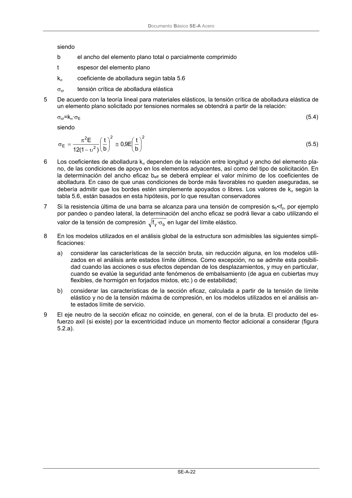
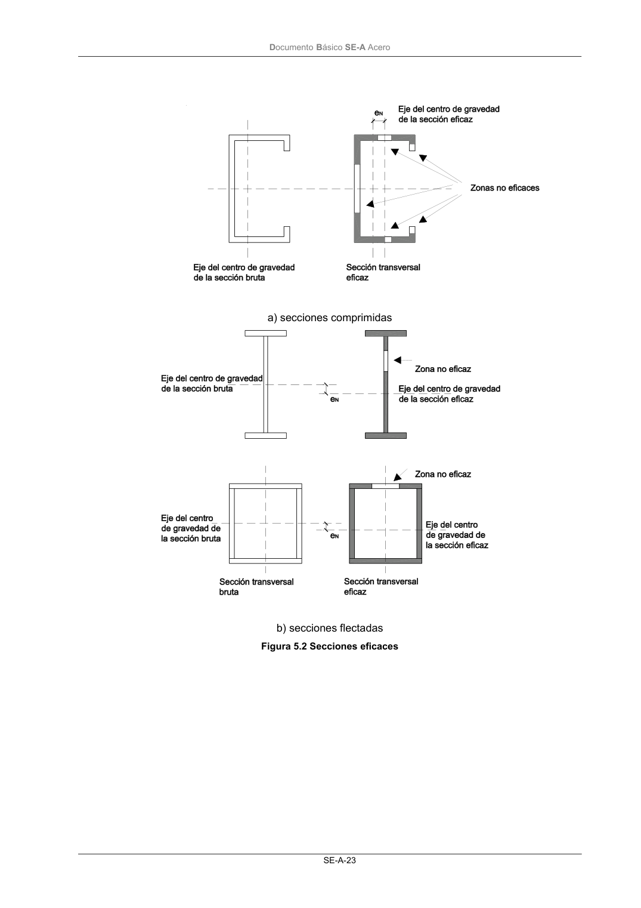

DB-SE-A · 5.2.5 Características de las secciones de clase 4 · versión 2007-10-23 · capa oficial
Formatos: JSON compacto · Markdown · PDF fuente
Ámbito del documento · texto del ámbito · documento y tablas
ID técnico a0046 · PDF pág. 23-26 · jerarquía no validada por persona · contrastado con el literal de la página 23 (candidato tipográfico); no validado por persona · padre: raíz
5.2.5 Características de las secciones de clase 4 1 En caso de que alguno de los elementos planos que forman una sección transversal sea de clase 4,la reducción, debida a la abolladura, de la rigidez y de la resistencia última, se tendrá en cuenta a través de la introducción de un ancho eficaz. Este procedimiento corresponde al método EER (Cla- se de sección 4), según la tabla 5.2. 2 El ancho eficaz beff de un elemento plano comprimido de ancho bc podrá determinarse según la re- lación: bef=ρbc (5.1) siendo bc el ancho de la zona comprimida del elemento plano total o parcialmente comprimido ρ factor de reducción 3 Para los elementos planos de cuyos bordes paralelos a la dirección de los esfuerzos por lo menos uno esté apoyado, el factor de reducción podrá determinarse como sigue: - para un elemento plano apoyado en los dos bordes: 1 ) 3 ( 055 ,0 1 1 2 p p ≤ λ ψ + − λ = ρ (5.2a) - para un elemento plano apoyado en un borde 2 p p 188 ,0 λ − λ = ρ (5.2b) siendo: p λ esbeltez relativa del elemento comprimido ψ relación de las tensiones en los bordes del elemento plano según tabla 5.6 4 La esbeltez relativa del elemento total o parcialmente comprimido se podrá determinar según la re- lación σ = σ = λ k f 235 4 , 28 )t/ b ( f y cr y p (5.3) DocumentoBásico SE-A Acero SE-A-22 siendo b el ancho del elemento plano total o parcialmente comprimido t espesor del elemento plano kσ coeficiente de abolladura según tabla 5.6 σcr tensión crítica de abolladura elástica 5 De acuerdo con la teoría lineal para materiales elásticos, la tensión crítica de abolladura elástica de un elemento plano solicitado por tensiones normales se obtendrá a partir de la relación: σcr=kσ·σE (5.4) siendo 2 2 2 2 E b t E 9,0 b t ) 1 ( 12 E ≅ υ − π = σ (5.5) 6 Los coeficientes de abolladura kσ dependen de la relación entre longitud y ancho del elemento pla- no, de las condiciones de apoyo en los elementos adyacentes, así como del tipo de solicitación. En la determinación del ancho eficaz beff se deberá emplear el valor mínimo de los coeficientes de abolladura. En caso de que unas condiciones de borde más favorables no queden aseguradas, se debería admitir que los bordes estén simplemente apoyados o libres. Los valores de kσ según la tabla 5.6, están basados en esta hipótesis, por lo que resultan conservadores 7 Si la resistencia última de una barra se alcanza para una tensión de compresión sb<fy, por ejemplo por pandeo o pandeo lateral, la determinación del ancho eficaz se podrá llevar a cabo utilizando el valor de la tensión de compresión b y· fσ en lugar del límite elástico. 8 En los modelos utilizados en el análisis global de la estructura son admisibles las siguientes simpli- ficaciones: a) considerar las características de la sección bruta, sin reducción alguna, en los modelos utili- zados en el análisis ante estados límite últimos. Como excepción, no se admite esta posibili- dad cuando las acciones o sus efectos dependan de los desplazamientos, y muy en particular, cuando se evalúe la seguridad ante fenómenos de embalsamiento (de agua en cubiertas muy flexibles, de hormigón en forjados mixtos, etc.) o de estabilidad; b) considerar las características de la sección eficaz, calculada a partir de la tensión de límite elástico y no de la tensión máxima de compresión, en los modelos utilizados en el análisis an- te estados límite de servicio. 9 El eje neutro de la sección eficaz no coincide, en general, con el de la bruta. El producto del es- fuerzo axil (si existe) por la excentricidad induce un momento flector adicional a considerar (figura 5.2.a). DocumentoBásico SE-A Acero SE-A-23 a) secciones comprimidas b) secciones flectadas Figura 5.2 Secciones eficaces DocumentoBásico SE-A Acero SE-A-24 Tabla 5.6 Ancho eficaz de elementos planos total o parcialmente comprimidos. Condiciones de apoyo y solicitación Compresión + Tracción -



PDF fuente redistribuible: copia fiel enlazada en esta página (SHA256 verificado).